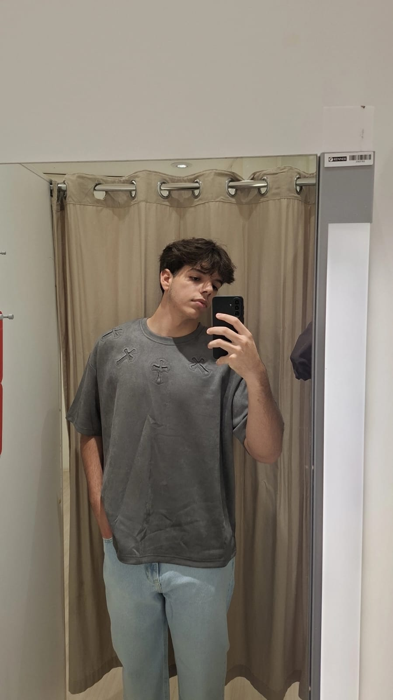

Disponível para oportunidades em TI · Remoto ou Campo Grande - MS
Joed Adauto de Souza Rocha
Estudante de Engenharia de Software (UNINTER) & Jovem Aprendiz em Suporte Técnico na RFK
Estudante bolsista no 4º semestre de Engenharia de Software, combinando base técnica em programação web e lógica com vivência prática em suporte técnico corporativo. Busco oportunidades de estágio ou atuação na área de TI para resolver problemas reais e evoluir continuamente.